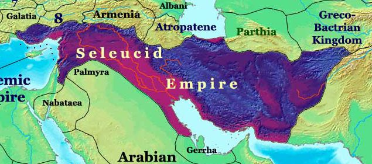

Suck it Xerxes
The heartland of the Persian Empire was what is now Iran and Iraq. In those days, Iran was the Persian heartland, with a disparate set of Iranian cultures being ruled over by the Persian nobility. Iraq was Babylon and Assyria, with Babylon in the south and Assyria in the north. All these lands were lost in a rush, as the Persian Shah Darius suffered defeat after defeat to Alexanders army.
After his death, these lands fell into the control of another of his generals, a man named Seleucus Nicator. He founded a dynasty now known as the Seleucids, who ruled over all that land as well as modern day Syria. He founded Antioch in Syria, and it became a leading city along with Seleucia in Babylon. Seleucus's offspring went on to rule the premier power of their day, until the constant warfare with Ptolmeic Egypt led to their downfall. Syria was lost to the Romans, and the rest to their former vassals, the Iranian Parthians.